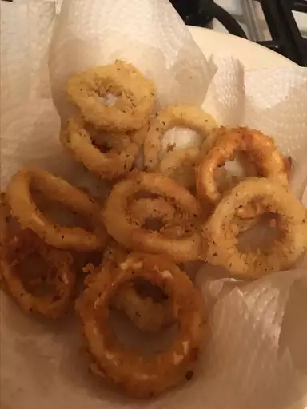

Calamari

Description
This fried calamari is a delicious, easy, quick, but moderately expensive recipe. Everyone I've fixed this for absolutely loves it!
Ingredients
- 3 cups vegetable oil
- 1/4 cup all-purpose flour
- 1 teaspoon salt
- 1 teaspoon dried oregano
- 1/2 teaspoon ground black pepper
- 12 squid, cleaned and sliced into rings
- 1 lemon - cut into wedges, for garnish
Steps
- Heat oil in a deep-fryer or large saucepan to 350 degrees F (175 degrees C).
- Mix together flour, salt, oregano, and pepper in a medium bowl. Dredge squid in flour mixture.
- Fry squid in hot oil until light brown, 2 to 3 minutes. Do not overcook, or squid will be tough. Drain squid on a paper towel-lined plate. Serve with lemon wedges.